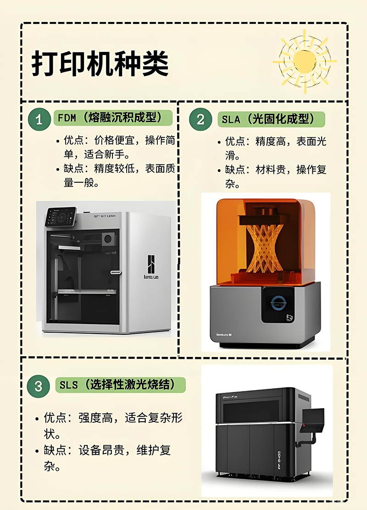
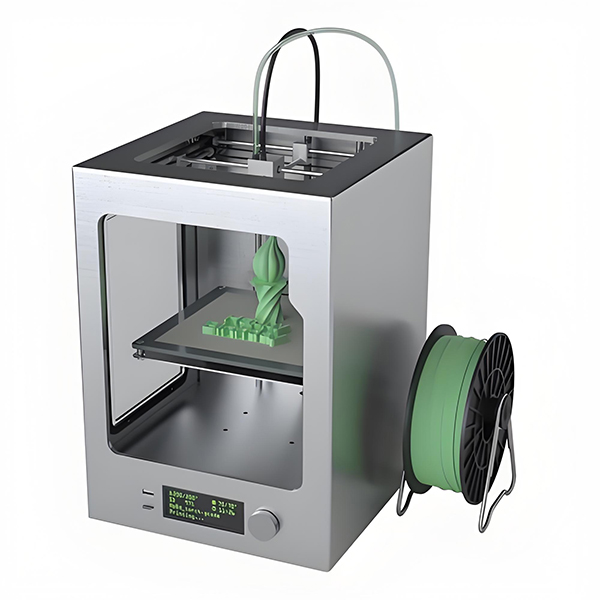
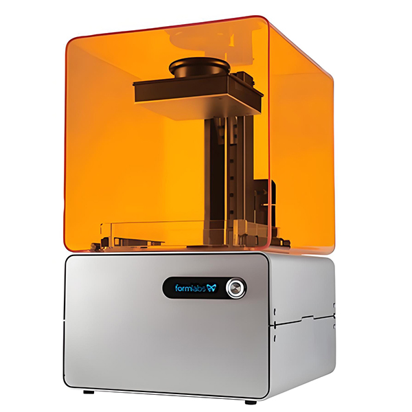
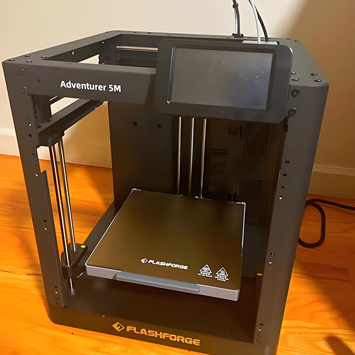

🔬 主流 3D 打印技术类型对比
了解目前市场上最常用的三种 3D 打印技术：熔融沉积成型（FDM）、光固化（SLA/DLP）和选择性激光烧结（SLS）。
FDM (Fused Deposition Modeling)
工作原理
通过加热喷嘴将热塑性丝材（如 PLA 或 ABS）熔化，并逐层挤出沉积在打印平台上，快速冷却固化成型。
特点
- 优势： 设备成本低，操作简便，材料种类多。
- 缺点： 精度相对较低，层纹明显。
- 适用： 原型设计、教育、普通家用。
SLA/DLP (Stereolithography / Digital Light Processing)
工作原理
使用激光（SLA）或数字投影仪（DLP）照射液态光敏树脂，使其发生聚合反应，逐层固化成型。
特点
- 优势： 精度极高，表面光滑，细节表现力强。
- 缺点： 材料成本高，需要复杂后处理（清洗、二次固化）。
- 适用： 珠宝、牙科、精密模型、艺术品。
SLS (Selective Laser Sintering)
工作原理
使用大功率激光选择性地烧结（熔化但不完全液化）粉末材料（如尼龙），使其结合在一起。
特点
- 优势： 无需支撑结构，材料性能优异（强度高），适合复杂内部结构。
- 缺点： 设备成本昂贵，粉末管理复杂。
- 适用： 功能性零件、小批量生产、航空航天。